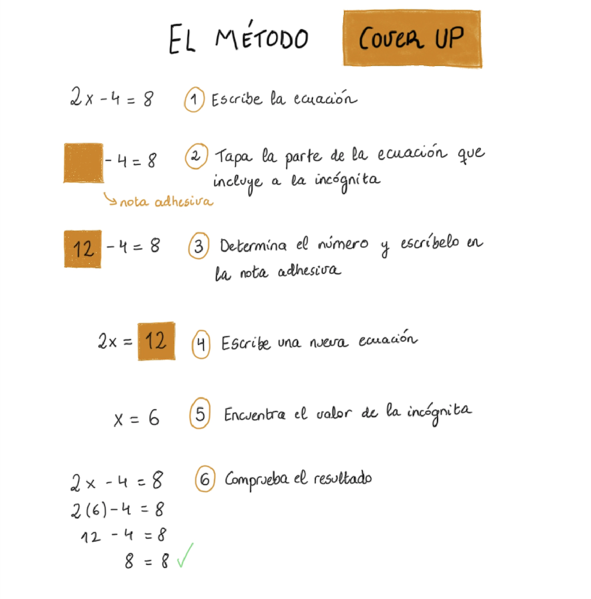
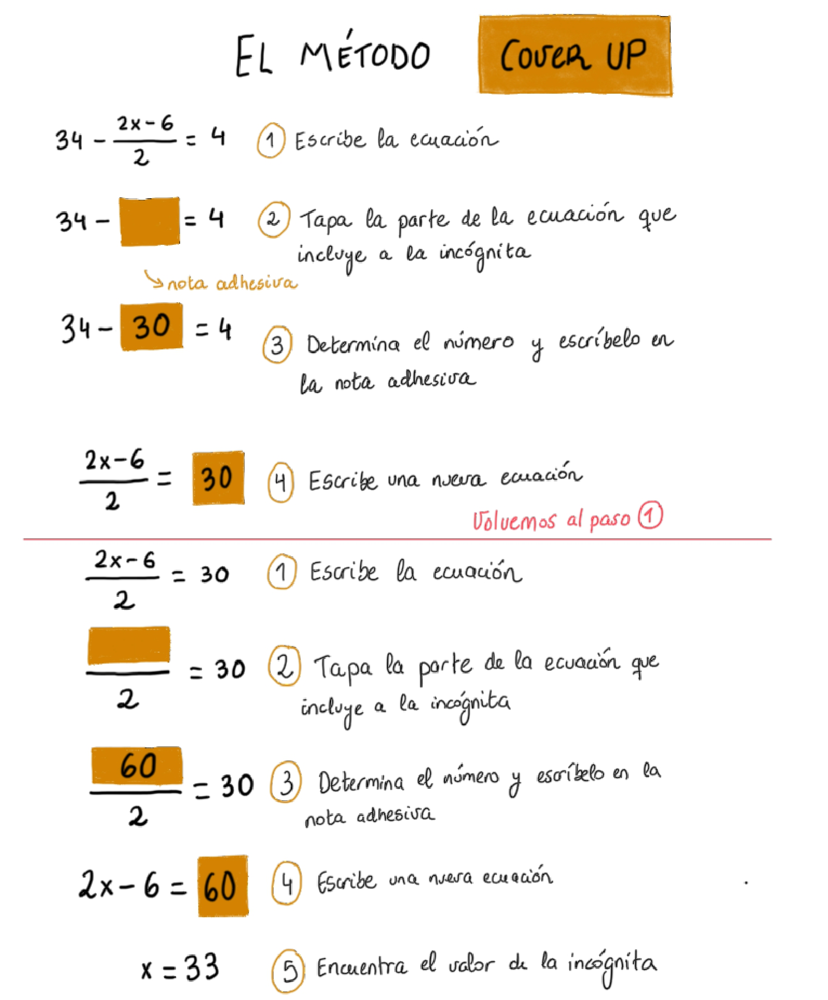
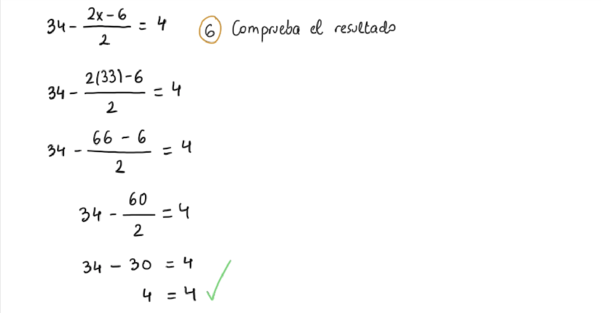
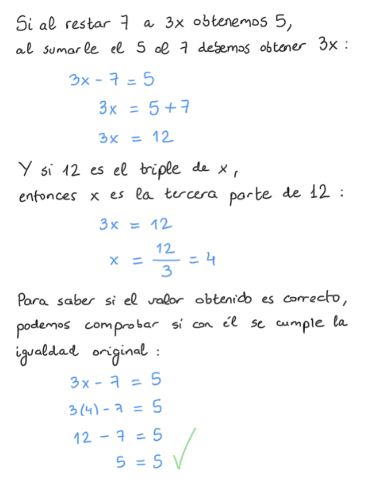

Ecuaciones con una incógnita
Al iniciarnos con ecuaciones en las que solo hay una incógnita, podemos aplicar estrategias meramente aritméticas para resolverlas, como:
- El método matemático "cover up"
- Invertir el orden de las operaciones
Al iniciarnos con ecuaciones en las que solo hay una incógnita, podemos aplicar estrategias meramente aritméticas para resolverlas, como:
El método cover up (tapar) es una estrategia utilizada para resolver ecuaciones en las que la incógnita aparece una sola vez. Como veremos consiste en ir actuando sobre trozos, que incluyan la x, de la ecuación que se va a resolver. Un método que puede ser útil para simplificar la resolución de estas.

Para resolver la siguiente ecuación, empleamos el método cover up dos veces.


Recordemos que resolver una ecuación no consiste en despejar la x, sino en descubrir el valor de una cantidad desconocida, que debe cumplir una cierta relación de igualdad. Para ello, otra de las estrategias que podemos emplear, consiste en aplicar las relaciones entre operaciones inversas:

¿Alguna vez te han planteado la siguiente adivinanza?
El ejemplo planteado es lo suficientemente sencillo como para resolverlo invirtiendo una a una todas las operaciones.
Resultado --> +3 --> :2 --> -3 --> :2 --> Número pensado
No obstante, si procedemos a analizar algebraicamente la adivinanza, obtenemos:
De manera que, para adivinar el número pensado solo hay que restar 3 al resultado que nos devuelven y dividir entre 4, es decir:
Resultado --> -3 --> :4 --> Número pensado
Obra publicada con Licencia Creative Commons Reconocimiento Compartir igual 4.0